直近1週間の更新
11/13 (金)

YOLO の追加学習にリグレッションテストを Zennの「Test」のフィード
物体検出のモデルを追加で学習させると、全体の精度は上がったのに、以前は見つけられていた物を見逃すようになることがあります。こうした変化を見つけるために、同じ動画に対する学習前と学習後の検出結果を、フレームごとに比べる仕組みを作りました。ソフトウェア開発でいう「リグレッションテスト」を、物体検出のモデルに当てはめたものです。https://github.com/koshien2015/detection-regression小さくて速い物体を検出するモデルで試すと、次の3つが見つかりました。正解の枠の付け方と判定の閾値だけで生まれる「偽のデグレ」全体の精度が上がった追加学習の中に...
17時間前
AIが「確認した」と報告したテストは、manifest の数値を書き換えても通っていた Zennの「Test」のフィード
8月中旬の夜、散布図を描く自作の小さなツールの開発セッションが終盤にかかっていた。最終レビューの指摘を直す作業は、Claude Code のサブエージェントに任せてあった。その修正の中身は、manifest.yaml の数値を照合するテストの追加だった。manifest には、ツールを紹介するときの根拠にする数値（全体の相関係数 R など）を書いてある。その数値がコードの実計算と合っているかを、テストで見張る。完了報告には、manifest の数値を一時的に変えたら、このテストが落ちることを確かめた、という趣旨のことが書いてあった。別の再レビュー担当のエージェントが、同じ確認を自分で...
19時間前
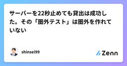
サーバーを22秒止めても貸出は成功した。その「圏外テスト」は圏外を作れていない Zennの「Test」のフィード
鍵の貸出をスマホで記録する台帳を作っています。鍵ボックスの前は電波が届かないので、通信できないときは操作を端末内の箱に積み、アプリを開いたときに自動で送る形にしました。作ったあとにやることは1つ。本当に圏外で止まらないのかを確かめることです。サーバーのプロセスを一時停止して、貸出を1件やってみました。結果は、貸出が普通に成功。端末内の送信待ちの箱には1件も積まれない。止めているのに、届いていました。 プロセスを止めても、接続を受け付ける側は生きているまず疑ったのは自分の実装でしたが、そこではありませんでした。プロセスを一時停止しても、接続を受け付けているのはその手前の...
19時間前
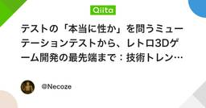
テストの「本当に性か」を問うミューテーションテストから、レトロ3Dゲーム開発の最先端まで：技術トレンドの断片的な考察 ソフトウェアテストタグが付けられた新着記事 - Qiita
最近の技術動向をいくつか覗いてみると、開発の「品質保証」という側面と、新しい「表現領域」という側面で、非常に興味深い動きが見られます。今回は、コードの堅牢性を極限まで追求する手法から、特定の技術スタックで実現した大規模なゲーム開発まで、それぞれの記事から読み取れる技術的なポ...
20時間前

モデル更新の効果を測るなら、エージェント環境を同時に変えない
Zennの「Test」のフィード
たとえば、AIに同じフォーム修正を頼む。前回は長い会話の続きで失敗し、今回は新モデルの新規セッションで成功した。その間にエディタも更新され、使えるツールも増えていたとする。この結果から分かるのは、切替後の構成で課題を解けたことまでだ。モデル単体の効果を測りたいなら、ほかの変更を分けて試す必要がある。GitHubは2026年11月16日にCopilotの一部モデルを廃止する予定だ。年間契約の個人利用者向け例外もあるため、対象は告知で確認したい。[1] 移行期限が迫ると切替先の選定に目が向くが、旧構成を使えるうちに比較の開始地点を残しておく価値がある。 開始commitだけでは、条件...
1日前
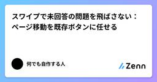
スワイプで未回答の問題を飛ばさない：ページ移動を既存ボタンに任せる Zennの「Test」のフィード
教材の本文を左にスワイプしたら次へ、右にスワイプしたら前へ戻れるようにしました。ここでスワイプから直接ページ番号を変えると、「この問題に答えるまで次へ進めない」といったボタン側の条件を通らなくなります。そこで、スワイプは「今の画面で押せるボタンを探して押す」ところまでにしました。ページ移動や読了の記録は、ボタンを押したときと同じ処理に任せます。 「次のページ」と「今できる次の操作」は違う本文では次のページへ進めても、演習画面では回答するまで進めないことがあります。また、「答えを表示」は次のページへ進む操作ではありません。指が少し横に動いただけで答えが出ると困るので、このボタンも対...
1日前
11/12 (木)
Goの基本を小さなサンプルで学ぶ｜変数・構造体・エラー処理・テスト Zennの「Test」のフィード
どういった記事なのかGoをこれから触る方向けに、読書リストを題材にして、変数の宣言からテストまでを順番に試します。実務では、一覧 API にページ分けを追加し、別の改修では文面を改行まで含めて確認しました。そのときの判断を、この記事用の読書リストのサンプルに当てはめて説明します。Goをインストール済みなら、標準ライブラリだけで動かせます。 どんな人間が書いているかテストエンジニアからプログラマー・SEに転身し、職場が変わるごとに C#、PHP、Ruby とメインで使う言語が変わってきました。この記事では、そうした経験を経て Go のコードを改修したときに使った基本を、これから...
2日前

AIで膨らみ続けるテストケースを、リスクベースドテストで選んで回すまでの記録 2 Zennの「QA」のフィード
2 Zennの「QA」のフィード
はじめにこんにちは。ビジネス映像メディア「PIVOT」で、QAエンジニア兼PjMをしている ケイスケ です。PIVOTのモバイルアプリ（iOS / Android）では、AIでテストケースを書くようになってから、ケースの数が増え続けています。リリース前のUAT（受け入れテスト）で全件を回すのが難しくなってきたので、リスクベースドテスト（RBT）で回すケースを選ぶことにしました。ルールは一度では決まらず、何度も作り直しています。この記事は、その途中で試したことと分かったことの記録です。 前提 テストケースを仕様書として使っているPIVOTでは、テストケースを仕様書としても...
2日前
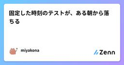
固定した時刻のテストが、ある朝から落ちる Zennの「Test」のフィード
無関係な変更のあとで、排他のテストが赤くなった同じジョブを二重に処理しないため、ハンドラが「処理中」のマーカーを置く仕組みがありました。別の実行がマーカーを見つけたら処理を止めます。ただ、先に動いた実行が途中で終了するとマーカーだけが残るため、一定時間が経過したものは掃除して取り直すようにしていました。テストは、固定の日時でマーカーを置き、「排他を取れなかった側は処理しない」を確かめていました。ところが、無関係なPRをマージした朝からCIが赤くなりました。直前の実行では通っていた検査です。差分を追うと、問題のマーカーを作るテストは変わっていませんでした。変わったのは実行した時刻...
2日前
PHPUnitとMockeryで学ぶ依存分離とモックテストの実践 Zennの「Test」のフィード
PHPUnitとMockeryで学ぶ依存分離とモックテストの実践 概要「テストは書きたいが、DBや外部APIに依存していて書けない」という状況は、レガシー寄りのPHPコードでよく起きます。この記事では、PHPUnit の標準モックと Mockery を使い分けながら、依存を切り離してユニットテストを書けるようにするまでを、ハンズオン形式で解説します。扱う内容は以下です。依存分離（依存性注入）が必要になる理由PHPUnit標準モック（createMock / prophesize を除く）と Mockery の違いリポジトリ・外部クライアントをモック化してドメインロジッ...
2日前

AWS EmulatorはAWS Blocksのモックを置き換えるのか？実際に動かして見えた「三つ目の層」 1 Zennの「Test」のフィード
2026年11月11日（米国時間）、AWSが AWS Emulator をリリースしました。AWS SDKやAWS CLIの呼び出しを、クラウドではなく手元のエミュレーターが受けて、AWSと同じ形の応答を返すツールです。https://github.com/aws/aws-emulatorニュースを見て、真っ先に頭に浮かんだのはこれでした。「AWS Blocksのモックって、もういらなくなるの？」AWS Blocksには、パブリックプレビューの段階から微力ながらコントリビュートしています。以前の記事では、BlocksがAmplifyやApp Studioと何が違うのかを整理しまし...
2日前
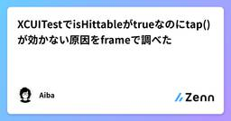
XCUITestでisHittableがtrueなのにtap()が効かない原因をframeで調べた Zennの「Test」のフィード
!この記事は Qiita に書いた記事を Zenn 向けに書き直したものです。元の記事：XCUITestでisHittableがtrueなのに、画面の下の端のボタンを押しても開かなかった（Qiita）XCUITestで isHittable が true を返し、tap() も実行されているのに、期待した画面が開きませんでした。個人開発しているiPhoneアプリ「チェックワンツー」のE2Eテストで、この問題が起きました。このテストは1本の中で、アプリのホーム画面から各機能を順に開いて全機能を1周し、同じ操作をもう1周くり返します。1周目は通るのに、2周目だけ失敗しました。調べ...
2日前

Sonnet 5 は単価が約3割安かったが、tool_use の plans が文字列で返った — 切替前テストで生成失敗を防いだ Zennの「Test」のフィード
上位プランのモデルを Claude Sonnet 4.5 から Sonnet 5 に切り替えると、料金は3割下がる計算だった。ところが、切り替える前に実際の API で試すと、ツール呼び出し（tool_use）の plans が配列ではなく JSON の文字列で返ってきた。そのままでは検証が毎回「0案」で落ち、上位プランの生成は全部失敗するところだった。さらに、その対策を入れたあと、別の AI（Codex）のレビューで「対策の呼び出しを消しても、テストが全部通る」ことが分かった。CocoDate（AIデートプランナー）の判断ログ D-101（2026-08-30）と D-144（20...
2日前
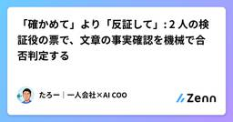
「確かめて」より「反証して」: 2 人の検証役の票で、文章の事実確認を機械で合否判定する Zennの「Test」のフィード
「確かめて」と頼むと、合格が返ってくるメールで配る週報の下書きを、公開前にエージェントに確かめさせています。数字や「〜している」という説明が、手元の記録と合っているかを見る役です。ある号で、確認役 1 人に下書きと確かめる範囲（6 項目）を渡し、「主張ごとに PASS / FAIL / 不明で答えて」と頼みました。返ってきたのは FAIL 0 件です。同じ下書きを、あとで別のやり方にかけ直しました。主張を 14 件に分けて、検証役 2 人に互いの結果を見せずに「反証しにいって。迷ったら反証に倒して」と頼んでいます。すると 3 件が反証されました。「1 本につき確認 1 回」...
2日前
AlphaProof Codeにみる形式検証とLLMの融合：Leanを用いた暗号実装の自動証明 ソフトウェアテストタグが付けられた新着記事 - Qiita
はじめにGoogle DeepMindから、ソフトウェアの形式検証（Formal Verification）をLLMエージェントによってスケールさせるアプローチ「AlphaProof Code」が発表されました（参照: Google DeepMind Blog）。発表に...
3日前
11/11 (水)
PHP脆弱性騒動に学ぶテスト自動化の重要性 Ranorex Blog - テスト自動化ツール 『Ranorex』
2026年10月21日、プログラミング言語「PHP」において、認証不要でリモートコード実行（RCE）を許す重大な脆弱性（CVE-2026-109618／CVE-2026-109619）の修正版が緊急公開されました[1][ […]The post PHP脆弱性騒動に学ぶテスト自動化の重要性 first appeared on テスト自動化ツール 『Ranorex』.
3日前
Google Apps Scriptを活用したスプレッドシート作業の効率化
Zennの「QA」のフィード
はじめに 自己紹介はじめまして。株式会社SkyfallでQA業務を担当している高見です。普段はSKYFLAGの品質保証業務を担当しており、テストの実施やテストケースの作成、E2Eテストの実装などに取り組んでいます。 本記事で紹介すること今回は、Google Apps Script（GAS）を活用して、スプレッドシートで行っていた作業を効率化した取り組みを紹介します。自動化に至った背景や実装内容、導入後に得られた効果について説明していきます。 Google Apps Script（GAS）とはGoogle Apps Script（以下、GAS）は、Goog...
3日前
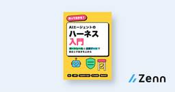
作って分かる！AIエージェントのハーネス入門 ガードレールと品質ゲートで暴走と手抜きを止める Zennの「Test」のフィード
AIエージェントにコードを任せるとテストが通ったという報告のまま機能が動かなかったり頼んでいない依存が入ったりします。原因はモデルの賢さよりエージェントを動かす外側のプログラム（ハーネス）に止める仕組みと確かめる仕組みがないことです。AnthropicとOpenAIの公式資料をもとにハーネスの組み方、ガードレールと品質ゲートの役割、Go・.NET・TypeScriptで使うツール、CRAP値・mutation testing・property-based testingによるテストの強さの検証を実動作検証した設定とサンプルで段階的に説明します。
3日前
Godotでゲームパッドだけで全画面を操作できるかをテストで調べる Zennの「Test」のフィード
Godot 4.6で作ったゲームがSteamのビルド審査で差し戻されました。ストアに「コントローラー完全対応」を付けていたのに、ある説明がマウスを乗せたときにしか出なかったためです。審査の指摘は1か所でしたが、同じ作りのUIはほかの画面にもありました。そこで、画面ごとに「パッドの方向キーだけで全部のボタンと説明に届くか」を調べる検査を作り、全画面で回しました。この記事では、その検査の作り方と、検査で見つかった4種類の穴をまとめます。 審査が見るのは「マウスとキーボードなしで全機能を使えるか」Steamの審査の文面には、コントローラー完全対応を付けるならインストールから終了まで、X...
3日前
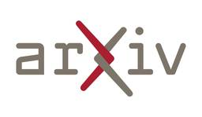
TSBugs Explorer: Exploring and Benchmarking TypeScript Bugs arXiv Query: search_query=all:"software testing"&id_list=&start=0&max_results=10
Curated datasets of real-world software bugs support empirical research in software testing, debugging, and automated program repair. However, exploring heterogeneous bug collections, comparing fault characteristics across projects, and constructing research-specific subsets often require manual inspection and custom scripts. We present TSBugs Explorer, an interactive visual analytics platform built upon our previously-published dataset of 633 bugs from 16 open-source TypeScript repositories, cl
3日前
【第3回】AI時代に、「場」を通してつながる③～違和感と共に生きる～│専門家2人による往復書簡 品質 | Sqripts
違和感に立ち戻る 天野さん、バトンを受け取りました。記事を読みながら、深い内省が垣間見えて、とても光栄な気持ちになりました。 同時に、書かれていたことに深く共感します。私自身も、コミュニティの中で「自分は何を得られたのだ...The post 【第3回】AI時代に、「場」を通してつながる③～違和感と共に生きる～│専門家2人による往復書簡 first appeared on Sqripts.
3日前
Museを使ってQA工程を『全身を赤く塗ってもいいほど』爆速化（当社比）した話 Zennの「QA」のフィード
※ 本記事は Qiita/Zenn への同時投稿です。 概要筆者はこれまで、vi コマンドやプレビュー内編集機能を備えたマークダウンエディタ「viMarkdown（ https://github.com/vivisuke/viMarkdown ）」の開発には、チャット型の生成AIのみを使用してきた。2026年10月22日に日本でリリースされた AIエージェント「Muse」（https://muse.ai）を、開発アシスタントとして試しに導入してみた。Muse は専用の VM（仮想マシン）を持ち、その中でリポジトリをクローンし、プログラムを実際に実行しながら、調査・検証・パッチ作成...
3日前
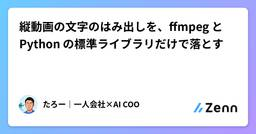
縦動画の文字のはみ出しを、ffmpeg と Python の標準ライブラリだけで落とす Zennの「Test」のフィード
検品は合格、でも見出しが右で切れていた自動で作っている縦長のショート動画で、見出しの文字が画面の右の外まで切れていました。検品は合格を出していました。調べると、検品が見ていたのは縦横比・尺・音声と、こちらが後から重ねる字幕だけでした。見出しや図は、生成ツールが作った絵の中に焼き込まれています。絵の中の文字は、どの検査の対象にも入っていませんでした。ここに検査を足します。条件は 3 つにしました。依存は ffmpeg と Python の標準ライブラリだけ（OpenCV も Pillow も入れない）判定は決定論。同じ動画なら毎回同じ結果になる取り出しに失敗したら、合格で...
3日前
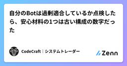
自分のBotは過剰適合しているか点検したら、安心材料の1つは古い構成の数字だった Zennの「Test」のフィード
暗号資産の自動売買Botを作っています。口座2万円ほどの少額で動かしながら、検証と本番の動きが一致しているかを毎週点検しています。今回は、統計的学習でいう過剰適合(オーバーフィッティング)が、このBotに当てはまるかを自分で点検した話です。結論から書くと、当てはまります。そして、「当てはまるけれどまだましな理由」として挙げた3つのうち1つは、点検してみると今の構成では成り立っていない数字でした。 1. 過剰適合とは何を心配しているのか過去のデータを見ながら設定を何度も調整すると、相場の本当の性質だけでなく、その期間にたまたま起きたことにまで設定が合ってしまいます。検証の成績は良...
3日前
11/10 (火)
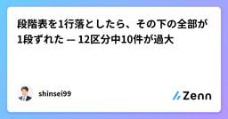
段階表を1行落としたら、その下の全部が1段ずれた — 12区分中10件が過大 Zennの「Test」のフィード
不動産の計算を12機能まとめた電卓アプリを更新する前に、表示される数字を全部こちらで計算し直しました。きっかけは別のAIに出した第三者レビューで、ある手数料に消費税が乗っていないと指摘されたことです。実際に当たっていました。怖かったのは指摘された1件より、同じ型の誤りが他にもあるならそのまま配信に載るという点でした。そこで12機能を順に、アプリを通さずに手と別計算で出し直し、1円でも違えば中を見るという潰し方に切り替えました。そこで一番大きいのが出ました。 症状価格帯ごとに額が決まる税の計算で、実務でいちばんよく使う価格帯が正しい額の3倍で表示されていました。30,000円...
4日前
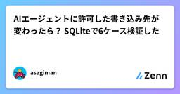
AIエージェントに許可した書き込み先が変わったら？ SQLiteで6ケース検証した Zennの「Test」のフィード
AIエージェントに draft への書き込みを許可したとします。実行前の権限チェックはPASS。しかし、実際に書き込む直前、実行アダプターへ渡される対象が protected に変わったらどうなるでしょうか。もう一つ厄介なケースがあります。書き込み自体は成功し、データベースに保存された。しかし、その直後に応答が途切れ、エージェントにはタイムアウトしか届かなかった。この状態で再実行すると、同じ操作を重複して行う可能性があります。Netsujoでは、AIエージェントの役割・権限・責任を検査するOSS「Agent Role Contracts（ARC）」を開発しています。今回、AR...
4日前
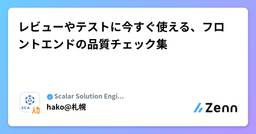
レビューやテストに今すぐ使える、フロントエンドの品質チェック集 Zennの「Test」のフィード
!記事作成は8割人力、2割AI（校正/イメージ画像など）です。 はじめに今回は、フロントエンドのレビューやテストに使える品質確認の観点を紹介します！保存ボタンを連打したときや通信に失敗したとき、日付や金額の表示などまで、どんなところを確認するかをまとめたものです。プラグインを作るにあたって、何をどう確かめるかを整理した中身をお話しします。作ったプラグインはこちら↓ 対象読者フロントエンドで何を確認するか、整理したい方動いている画面にも、確認漏れがないか気になる方AIへの依頼やコードレビュー、テストの観点を見直したい方 さくっと試したい方へサブエージェ...
4日前
フロントエンドを監査し、改善点をIssueにまとめるAIプラグインを作りました Zennの「Test」のフィード
!記事作成は8割人力、2割AI（校正/イメージ画像など）です。 はじめにAIに金額を扱う画面を作ってもらって、自分の環境ではちゃんと動いている。でも、言語や地域の設定（ロケール）を変えると、意図した金額が保存されないことがあります。!ロケールは、言語や地域に合わせて、数値や日付などの表示方法を決める設定です。たとえば、ja-JPは日本の日本語、de-DEはドイツのドイツ語を表します。ロケールによって、小数点や桁区切りに使う記号、日付の並び方などが変わります。余談ですがロケールは意外と奥が深く、数字の区切り方ひとつでも表示や入力/保存するときの扱いまで考える必要があ...
4日前
11/9 (月)
【JaSST'26 Niigata参加レポート】QAの「暗黙知」をAIとの比較で見つける 1 ソフトウェアテストタグが付けられた新着記事 - Qiita
はじめに2026年9月18日に開催された JaSST'26 Niigata に参加してきました！いろいろな発表を聞いた中で、「これはぜひ紹介したい！」と思った事例発表があったので、この記事でシェアさせてください。📌 紹介する発表「QAエンジニアの暗黙知を可視化す...
5日前